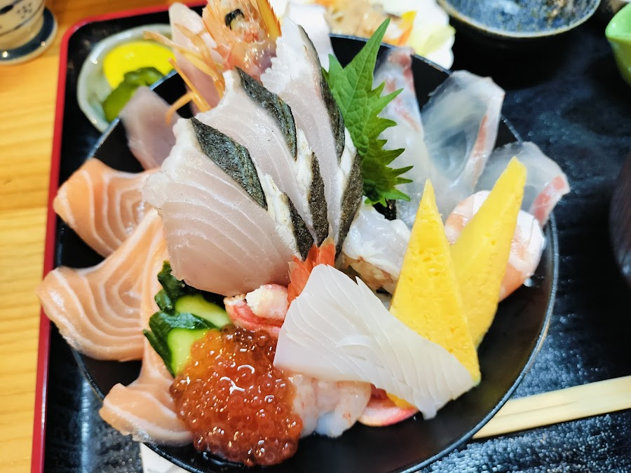

Our Story
170年の目利きが
選ぶ、この一杯
唐津市中町商店街に店を構える亀山鮮魚店は、創業170年を超える老舗鮮魚店です。
「自分にも何かできないか」という思いから、2021年に鮮魚店の隣の空き店舗で海鮮丼専門店「魚処 亀山」を開業。毎朝、唐津漁港で水揚げされた天然魚を直接仕入れ、その日のうちに丼にのせて提供します。
刺身醤油・みりん・お酒をブレンドした自家製タレは、鮮魚店ならではの一品。イサキは一度炙って香ばしさを引き出し、アオリイカは1日寝かせることで甘みを増幅させるなど、素材ごとに仕込みにこだわっています。
170年
創業からの歴史
毎朝
漁港から直送仕入れ

※ 写真提供：Google マップ